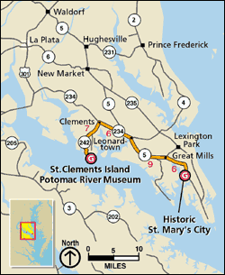
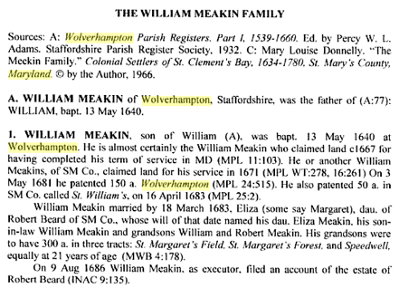
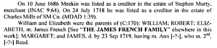
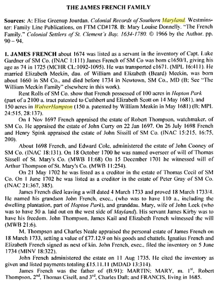
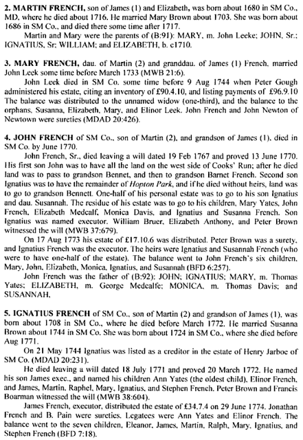
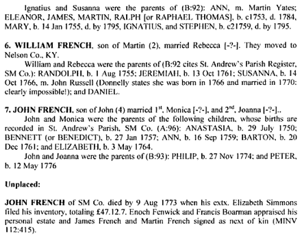

French Family Association
The Official Website of the Surname French
St. Clements Island, Maryland, where the first English settlers landed on 25 March 1634. The 40-acre park contains a memorial cross dedicated to the memory of the first Marylanders. James French immigrated 37 years later to St. Clements, MD. See Marker.
{kind=link}
Chart #137, James French, b. ca. 1640
Hopton Park, St. Mary’s County, MD
Also Hardin Co., KY; Nelson Co., KY; Union Co., KY
This chart updated by Mara French on 4/13/10. Numbers in brackets [ ] show the source material and refer to the bibliography at the end of this chart. An asterisk (*) shows continuation of that line. Send any corrections or additions to this chart to marafrench@mindspring.com. Revisions: 2008, 2010.
Contents
If you are interested in taking a DNA test, are a male with the surname French, and are of this line, please email Kent Walker.
· James French Was Not From Ireland
· Marriage
· Latest Research on James French
The Last Will of James French, March 4, 1733, St. Mary’s County, MD, Pgs. 26-27
Other Records of James French, 1st Generation
Will of John French, Sr., St. Mary’s Co., 19 Feb 1767
Will of Ignatius French, Sr., St. Mary’s Co., 18 Jul 1771
1810-1850 U.S. Census from Mason Co., KY
St. Mary’s County, Maryland, Marriages, 1638-1820
Y Marriages, Nelson Co., KY Marriages From 1782 to 1850, Screen 16 of 119
St. Mary’s County Land Ownership, 1637-1800
Background

Recently it has been researched that James French was not an Irish immigrant from Galway, Ireland, formerly noted in Settlers of St. Clement’s Bay, MD [4].
This chart is kept separate from Hugh French, FFA Chart #36, although many researchers believe James French could have been Hugh’s brother. This point is now proven through DNA testing. James is in DNA Group 7 and Hugh is in DNA Group 1.
Some genealogists say James’ father was Martin French who m. Mary. It appears that James was sent to Maryland to manage land purchased by the family, who paid for his passage.
Please note that this is just a rough first draft of this line. Additions and corrections gladly accepted by emailing marafrench@mindspring.com. Mara French
First Generation
1.1* James French, b. ca. 1650/51 probably in England (and probably in the Somerset County area), d. 17 March 1733 (will proven), age 83, in Leonardtown, Newtown One Hundred, St. Mary’s Co., MD.
James French Was Not From Ireland
Here are the reasons why James French was not from Galway, Ireland (from Kent Walker):
· The book “Colonial Settlers St. Clements Bay 1634-1780 St. Mary's County, Maryland” by Mary Louise Donnelly. Ennis, Texas, was published in 1996, saying that James French came from Galway, Ireland, in 1671. This “story” first appeared in 1996, the same time the book was published. There are no hard facts. This book was published 325 years after James French arrived in Maryland. One has to question this “story”. James French was born in Galway County, Ireland circa 1650. Donnelly is the only source for James French having been from Ireland. Her books have been most unreliable and I use them only for clues—not for facts.
·
James French was transported
out of England by Thomas Notley of Dorset,
England in 1671. In fact after reviewing the connections that James has in both
England and on St. Clements's Island, I am of the opinion that James and the
other 52 "adventurers" transported out of England by Notley 1671 were hand picked by the Catholic
gentry that flourished there (Surnames: Gerrard,
Slye, Cole, Hatton, Thompson, Gardiner, Cissell). These wealthy individuals had a great deal of
money at stake in their ventures and no doubt wanted men they knew and
could trust. The fact that Notley uses the
term "adventurers" to describe the transported lot is telling in
itself. These men were not convicts, political prisoners, petty thieves, or
common indentured servants.
Gerrard, Thomas, and Robert Slye
Edward Cole
Arthur and Robert Thompson
Luke Gardiner
Thomas Cissell
From Mara French: these names do not appear in Essex County, England, per the Essex Record Office.
·
I also have seen where James was a servant to
Luke Gardiner in 1674. Both of these facts lead me to question James's Irish
heritage. The family "tradition" was that James French was sent to
America from the wealthy merchants of Galway (tribes of Galway) to manage lands.
It seems to me if he were wealthy landholder he would not arrive in 1671 as an indentured
servant. All of the evidence, wills, land records, and court depositions that
are attributed to James seem to point to him being from England and he seems to
be tied to powerful English Catholic Families. I believe what has happened is
what I would call reverse Genealogy. Someone had knowledge of the “Tribes of
Galway” and French's of this region; they had a 1st name of James, and a
general French surname history. With this someone has tried to tie James to
these Galway French's, and especially to Martin French of Galway, noting that
James French named his son Martin.
Note from Mara French: This was not the Luke Gardiner of Ireland who lived
later on, from 1745-1798 as per Wikipedia. But he was the Luke Gardiner of
Chart #137, the one born in 1622 in Woodberry, Oxfordshire,
England and d. Dec 1674 in Canoe Neck, Oakley, St.
Mary’s Co., MD?
· I even went as far as to contact a local Galway certified genealogist to (1) prove that James was from this Galway line and (2) to see if there was a James born circa 1650 that could have been our ancestor. I struck out emphatically on both counts. I was told that no such James French existed that was born in that time frame (+ / - 5 years) and that Researchers in Galway see this stuff all the time – a bogus genealogy that is passed down the generations. As expected, she said because of their popularity they have most of their problems with the surnames in the “tribes of Galway”, as most people attempt to connect to these families out of romanticism. I believe this is exactly what happened with my French line.
· On 6/25/1722, James French gave a deposition on the birth and lineage of Gerard Slye. At that time, his age was given as about 72 which places his date of birth ca 1650. His father would have been born prior to 1630. His grandfather would have been born prior to 1610. (Rarely have I ever found men marrying prior to the age of 20). So, if Martin French (Tribes of Galway) was supposed to be the father of James French of SMC, he would have been at least 107 at the time he made his will in 1737 and Martin French, the grandfather would have been 127. Obviously, this won't work.
Marriage
According to the inventory of Luke Gardiner taken in 1674, James French was one of his servants on S. Clement's Island (Inv 1:111). When he completed his term as a servant, James French married Elizabeth Meakin, the daughter of William Meakin and Margaret Beard. It was through this marriage that he became the possessor of 129 acres of "Wolver Hampton" which bordered on "Hopton Park". After William Meakin’s death, his tract totaled 150 acres and he later received 100 acres of "Hopton Park" from John Baptist Carberry, an Irish immigrant. James French and his descendants lived at "Wolver Hampton" until after the Revolution [4]. According to Wikipedia, Wolverhampton is a city and metropolitan borough of the West Midlands in England. We don’t think James French came from that area, but so far we have no proof.
We need more substantial evidence to prove this marriage. This was probably based on the fact that William Meakin patented "Woverhampton", 150 ac. in Newtown 100, 5/3/1681 which was possessed by James French in 1707. Land was sometimes sold, not always inherited! I find no proof that the wife of James French was Elizabeth Meakin! See the bibliography for the Ancestry of the William Meakin Family.
Elizabeth Meakin d. after 1733, as the widow of James French. This record has not been found.
Immigration
Ref. [8] has obtained the transportation record of James French from the Maryland State Archives and he believes James was transported on a ship called the “Society” of Bristol, England. This ship was docked in February 1671 and Thomas Notley along with others like Benjamin Rozier, William Covin, & Thomas Bodkin have come to claim their right to land for transporting servants into the colony. The surnames of the other servants transported with James French have Anglo surnames rather than Irish / Celtic Surnames. (Baker, Jackson, Jefferson, Foster, Atkinson, Miller, Chapman, Hunter, Wright, Wilkinson, Smith, etc…etc…). If they imported slaves, they were fine. Thomas Notley died on 3 Apr 1679. He had become Maryland’s eighth Governor.
James was an indentured servant and only possessed land after his indenture was up [8]. He later has in Maryland with families from Southern English counties (Somerset, Devon, Oxforshire, etc…). There is James French born 1650 Somerset England in the IGI records [8].
I also have that James French was transported in 1671 and agree that if he had been sent here by wealthy merchants, they would have paid for him to come and he wouldn’t have arrived as an indentured servant. I believe if there’d been a reference to Ireland, it would have been stated and there’s enough people researching this family that if from Ireland someone would have produced the document by now. Thomas Notley was from Dorset, England but came to St. Mary’s County and was Proprietary Governor of Maryland. He was a wealthy land owner.
Note by Kent Walker: (1) Notley, Gerrard, Slye, and Thompson belonged to families mentioned in book “The Landed Gentry of England” as possessing large estates in Somerset and Dorset counties England; per the “The Catholic Historical Review”. (2) In Thomas Notley’s will he says “he is a friend of Capt. Slye and his wife Jane”. James French was transported by Notley and later gave 2 court depositions on the heritage of the Slye family. (3) Notley transported James French from England to Maryland colony in 1671 with 52 other “adventurers”. James French, transported by Mr. Thomas Notley, rights proved 16 February 1671.
Records to check:
· Saint Mary Redcliff Parish in Bristol, Somerset (later Avon), England for early records.
· Christ Church, Bristol, England, another early church.
· The ship “Society” sailed into Pennsylvania in Aug 1682. It might have sailed into Virginia in 1671.
· Bristolian Sir John Yeamans, a Barbados planter, introduced slavery to North America.
· In 1686 the Bristol ship “Society” was fined for trying to import slaves into Virginia. See http://www.piratewalks.co.uk/bristol-slaves.asp
· The ship “Society” entered the U.S. on 28 Mar 1671 with 32 servants aboard, according to “Ship Passenger Lists” by Carl Boyer, 1977.
· Thomas Notley, gent., was a Burgess and a member of the Lower House of Maryland and an attorney at law; will proved 3 Apr 1679. He was the eighth Governor of Maryland from 1676-1679. See http://www.msa.md.gov/msa/mdmanual/01glance/chron/html/chron16.html
· On 23 Mar 1680 in Hopton Park, James French received 100 acres along with John Baptist Carbery who received 1,600 acres, and the heirs of Arthur Thompson received 400 acres. James French’s daughter, Mary, m. Robert Thompson whose father was Arthur Thompson.
Most likely James immigrated to St. Mary’s Co., MD in 1671, being transported to Maryland in 1671 by Thomas Notley. He was transported at the age of 21 along with 52 other adventures who planned to settle permanently in Maryland. Thomas Notley became the eighth Governor of Maryland. James’ indenture was complete in 1707 when he was 57 years old. He was a planter. He was transported at the age of 21 along with 52 other adventures who planned to settle permanently in Maryland.
Thomas Notley lived along the Wicomico River in Maryland in 1672/73. Notley was a prominent Maryland resident who would later serve as governor. Apparently Thomas Notley had lived in Maryland prior to 1671, the year in which he transported James French. He paid forty thousand pounds of tobacco for the Duddington estate in 1671 and had his 3 tracts of land united into one manorial holding, to be known as “Cerne Abbey Manor.” [21]. Thomas made his will on 3 Apr 1679 and left “Cerne Abbey Manor” to his godson, Notley Rozier, son of Colonel Benjamin Rozier [21].
James French’s Family
James French had 3 children: Martin, Mary, and Francis. Mary m. Robert Thompson and died prior to 1707. James’ father may have been Martin French who m. Mary. All of James children, Mary, Martin, and Francis, were born in St. Mary’s, Maryland.
Land Deeds
James French purchased land in Hopton Park, St. Mary’s Co., MD. To see a map of Maryland in 1671, the year that James French immigrated, go to the Maryland State Archives website. Also see Other Records of James French. James lived in Newtown One Hundred, St. Mary’s Co., MD [7].
James French’s Last Years
The Last Will of James French, dated 4 Mar 1733, St. Mary’s Co., MD.
Land records show that at his death he owned a 50-acre tract called Maryland and 110 acres called Hopton Park (Guest's Neck, Evans Quarter, Indian Quarter, Cole Brooke, Koaxes). He is listed as owner of the later, 129 acres, on the 1709 rent rolls and in 1707 (Chron. of St. Mary's). He also has 150 acres known as Wolver Hampton in the 1707 rent rolls. This was land owned by his father-in-law in 1681. Starting in 1751, John French, Sr. is listed as the owner of Hopton Park, listed in varying sizes until 1770, when he willed it to Ignatius French, who had it until 1787.
Latest Research on James French
Research from Kent Walker, walkerkk@comcast.net
I found “a” James French christened May 16th 1651 at St. Peter's and Paul's Wharf London. I ordered the church register from a local family history center. This may or may not be the James French who immigrated to Maryland. See the Registers of St. Peter, Paul’s Wharf (pdf file).
James French's parents are listed as Thomas and Avis French.
Other siblings listed are Elizabeth b. 1644, Thomas b. 1646, Sara b. 1648, and
William b. 1655. St. Peter’s and Paul’s Wharf burned during the Great Fire of
London of 1666 http://en.wikipedia.org/wiki/St_Benet_Paul's_Wharf the year before the Great Plague of London wiped out
over 20% of the population of the city. IF this is my James -
It’s my theory that he decided to immigrate to the colonies
because A) the area in which he lived and worshiped was destroyed by fire and
B) His family might have been hard hit by the plague.
·
I don’t have much info relating to the ship
“Society”. Usually when a ship is mentioned in the Patent record, the ship’s
“master” or captain is recorded – in this case it was not. I do know that
the “Society” made numerous trips to the colonies prior to and after 1671
– & was used as a slave ship in later in its tenure. I don’t have a
whole lot of resources when it comes to researching ships and passenger lists.
·
Trying to make “in roads” in Dorset and Somerset
Counties. I have a lady researching the parish registers of Cerne
Abbas Dorset looking for French’s. My reasoning for
targeting this local is that both Thomas Notley and
Benjamin Rozer are listed in the registers there. Of
course James French was transported by Notley and
later had dealings with the Rozer Family. Its
possible James was born in a different Dorset parish but knew of Notley and Rozer and their
plans/adventures in the new world.
·
I attached a survey dated 1721 showing property
boundaries of James French’s portion of “Hopton Park” on St. Mary’s County. I thought it was
interesting to see where James lived and for his descendents to be able to
goggle map the location now for reference.
{kind=link}
·
Comment from Mara French: It would seem natural
that James would have named his children Thomas and/or Avis after his parents,
but the James French of Chart #137 (this chart) named his children Martin,
Mary, and Francis.
·
Notes
Kent Walker made with the help of experts at the St. Mary’s Genealogical
Society. His notations are in blue. You might have seen some of this before
from our previous postings but thought I would forward on to you in case any
other French researchers / family members wanted to see them. Feel free to use
them however you like.
Research from Mara French, marafrench@mindspring.com
· James French, christened 30 Nov 1650 in Merriott, Somerset County, England. His father was James French and his mother was Mary. These names seem quite logical in that James named his daughter Mary. James was later in Maryland with families from Southern English counties, such as Somerset, Devon, and Dorset. This information was submitted by Leslie Anne Sauers, P.O. Box 203, Gervais, Oregon. The earliest mention of the surname French in the Merriott records was on 20 May 1648, the baptism of Catharine French, daughter of James and Mary French. Research has been done on this line indicating that no one immigrated to America. See http://www.merriottfamiliesgenealogy.net/french.htm
· Gerrard Slye, one of James French’s closest friends, was b. 1654 and d. 1698. His father was Robert Slye, who was b. in St. Mary’s Co., Maryland, in 1655, indicating he met James French in Maryland. Gerrard made his will on 18 Jan 1670/71 and can be found on ancestry.com, transcribed. His will indicates he had connections to England, but not to Ireland. Gerrard was his eldest son and executor. Website: http://trees.ancestry.com/tree/9152024/person/-793345598/story/5546f8d2-0f8f-4a86-8e4b-07a0a1b8a81f?src=search
· Thomas Notley, in his will of 3 Apr 1679, gives to his sister, Katharine Grudgefield, of London, England, indicating that this group of immigrants (including James French) was probably from England. He also gives to Gerrard Slye. Considering that Thomas Notley had immigrated with James French in 1671 and had therefore been only 8 years in Maryland, it could be possible that this bunch was from London. This will is transcibred on ancestry.com.
· John Coode mentions Gerrard Slye in his will of March 1708. He served as Maryland’s governor from 1689-1691. John Coode was born in Penryn, Cornwall, England, ca. 1648, to a wealthy English family. He attended Oxford University and immigrated to Maryland in 1672. This is another indication that James French was from the southwest area of England. Will on ancestry.com.
· Thomas Gerrard, Lord of St. Clements Manor and son of John and Isabel Gerrard, was baptized 10 Dec 1608 at Winwick Parish, New Hall, Lancashire, England, died 19 oct 1673 in Westmoreland Co., VA. From ancestry.com.
Second Generation
NOTE: These next generations are in draft format and need more research. I mainly did research on the England side for my upcoming trip to England in June 2010.
Children of James and Elizabeth (Meakin) French, 1.1
2.1* Martin French, b. ca. 1682 [73] in St. Mary’s Co., MD, d. 4 Apr 1716 intestate in St. Mary’s Co., MD, m. Mary Brown, dau. of Derrick Brown. They had 7 children.
2.2 Mary French, d. 21 Aug 1724 in St. Mary’s Co., MD.
Mary m1. Charles Daft. (He may have actually been her last husband)
Mary m2. Robert Thompson, an early immigrant to St. Mary’s Co., MD, who was b. 1640 in Kirkfenton, Yorkshire, England, m. bef. 1685, d. bef. Nov 01, 1697 in Annapolis, St. Mary’s Co., MD. Robert Thompson was the son of Arthur Thompson and unk. Stafford. Arthur Thompson appraised Thomas Cissell’s will [21]. Robert Thompson was an English Catholic.
Mary m3. Thomas Cissell, b. 1664 in Newtown Hundred of St. Mary’s Co., MD, m. ca. 1698, d. bef. 28 Mar 1701 in St. Mary’s Co., MD. Thomas Cissell was the son of John Cissell and Mary Shireciff, both English Catholics. Thomas Cissell was an English Catholic [21].
James French owned the smallest portion of "Hopton Park" (100 acres); James and Martin French would both witness the will of Arthur Thompson in 1701. Martin French died intestate ca 1716; his estate was appraised by James Thompson and Jean Baptist Carbery. Listed as his next of kin were: James French and Elisabeth Thompson. Much later, Arthur Thompson's son John Thompson would witness the 1733 will of James French (who outlived his children and left 110-acre tract of "Hopton Park" to his grandson John French who in turn left it to his own son Ignatius French in will of 1767.) James French was also named "overseer" of the 1700 will of Thomas Sissell of St. Mary's County who left a wife Mary, an unborn child, and three children called "sons and daughters-in-law" but seemingly what we would call "step-children. One of those was James Thompson; the others George ___ and Betty ____ (perhaps also Thompson). It seems likely that Mary ( ) Thompson Sissell (Cissell) was a sister-in-law to Arthur Thompson [5].
The seemingly convoluted relationship from William Thomson to Arthur Thompson through "Hopton Park" demonstrates dramatically how "nasty, brutish and short" life could be in the early days in Maryland: few widows and widowers could afford to remain unattached for more than a few months and few testators left more than 1-3 children, if any, during the first 50 years or so [5].
2.3 Francis French, d. before 1733, as his father James French outlived all his children and willed his goods to his grandchildren.
Third Generation
Children of Martin and Mary (Brown) French, 2.1
3.1 Susannah French, b. ca. 1694, m. James Brown.
3.2* James French, b. ca. 1696, m. Rachael.
3.3 Mary French, b. ca. 1698, d. after 1733, m. John Lake (or Leek or Leake) in St. Mary’s Co., MD. They had son William Leake who m. Ann Redman, dau. of John Redman, both of St. Mary’s Co.
3.4* John French, b. ca. 1704, m. Monica before 1749, d. 17 Jun 1770 in St. Mary’s Co., MD.
Will of John French Sr., St. Mary's Co, 19 February, 1767 13 Jun, 1770 To first son John French, all land on west side of Cookses' Run; at his decease, to grandson Bennett French; if he die without hrs. to grandson Barnet French. To second son Ignatius French, my now dwelling plantation and all remainder of land called "Hopton Park"; but for want of hrs., to grandson Bennet French. 1/2 of personal estate to second son Ignatius French, and youngest dau. Susanna French. Remainder of estate to be equally divided between children: Mary Yates,, John French, Elizabeth Medcalf, Monaco Davis, Ignatius and Susanna French. Ex: Son Ignatius. Wit: Wm. Bruer, Elizabeth, Anthony and Peter Brown.
3.5* Ignatius French, Sr., b. ca. 1705, d. between 17 Jul 1771 and 20 Mar 1772 in St. Mary’s Co., MD or in Nelson Co., KY, m1. Elizabeth, and m2. Susanna Farrell, who d. before 1771.
3.6 Elizabeth French, b. ca. 1712, m. James Thompson.
3.7* William French, b. ca. 1715 in St. Mary’s Co., MD, d. Nelson Co., KY, m. Rinah or Rebecca or Roseanna Davis before 1752 [1]. They had 3 children.
Fourth Generation
Children of James and Rachel French, 3.2
4.1 Martin French [3]. I’m not sure if the following paragraph belongs here or not, however, it does talk about Martin French and his parents James and Rachel. Mara
Samuel Greenwell Petition against estate of Martin FRENCH, 8/1/1804, St. Marys County, MD Petition of Samuel Greenwell shows that a certain Martin French d. intestate on or about April 20, 1804 seized of "Twittenham", leaving your petitioner, heir and representative of Mary Greenwell (deceased) who was sister to sd. Martin French and entitled to 1/5 part; James French, a brother 1/5 part; Raphael French, 1/5 part; Susanna Greenwell, Eleanor Brown, William Yates, Ignatius Yates, Eleanor French, John French, Dorothy Cissell, George Cissell, and Barton Yates, which last mentioned five are infants, his legal representatives. Eleanor French and John French, heirs of Ignatius French, 1/5; 1/6 to Barton Yates, heir; Martin Yates, dec'd who was one of the heirs of Ann Yates, dec'd, sister of the dec'd, 1/5; the others 1/6 or 1/5 pt. to Susanna Greenwell, one of the heirs of Ann Yates, sister of the dec'd; Eleanor Yates, 1/6 of 1/5 of Ann Yates; William Yates, 1/6 of 1/5 pt. of Ann Yates, sister of the dec'd; 1/6 of 1/5 pt. To Ignatius Yates, of Ann Yates, sister of the dec'd; Dorothy Cissell and George Cissell of Catherine Cissell, repres. of Ann Yates. Purchased by Andrew Somerville, highest bidder. (SMC Land Commission Records, JH #5, f.194).
Children of John French, 3.4
4.2 John French and his sons Bennett and Barnet French are mentioned in John’s father’s will, b. ca. 1749.
4.3 Ignatius French, mentioned in his father’s will, m. Susanna before 1751. In 1785, a group of sixty Catholic families, mostly St. Mary's Parish, formed a pact to migrate to Kentucky from Maryland. The first group of twenty-five families left Maryland in early 1785 and included the family of Ignatus French.
4.4 Sarah French, mentioned in her father’s will.
4.5 Margaret French, mentioned in her father’s will.
4.6 Mary French, mentioned in her father’s will, m. Yates.
4.7 Elizabeth French, mentioned in her father’s will, m. Medcalf.
Children of Ignatius and Susanna (Farrell) French, 3.5
4.8* Raphael Thomas French, b. ca. 1742 in St. Mary’s, MD, d. ca. 1851 in Hardin Co., KY. He m. Mary Ann Mead, and she d. before 1820 in Hardin Co., KY.
4.9* James French, b. 1750 in St. Mary’s Co., MD, d. in 1815 in Nelson Co., KY, m. Susanna Melton.
4.10 Ann French, m. Martin Yates before 1772 [1].
4.11 Eleanor French, m. James Anderson before 1772 [1].
Children of William and Rinah French, 3.7
4.12 Rodolph or Randolph French, chr. 1 Aug 1755, St. Andrew’s Episcopal Church, Leonard, St. Mary’s, MD.
4.13 Jeremiah French, chr. 13 Oct 1761, St. Andrew’s Episcopal Church, Leonard, St. Mary’s, MD.
4.14 Susanna French, chr. 14 Oct 1766, St. Andrew’s Episcopal Church, Leonard, St. Mary’s, MD, d. 1849 in Daviess Co., IN, m. William Smith ca. 1786 in Nelson Co., KY. Southern Marylanders who emigrated to the counties of north-central Kentucky prior to 1800 established communities at the following locations: Pottinger Creek, Hardin Creek, Bardstown area in Nelson County, KY. Many Frenches exist in the 1900 Nelson County Census.
Fifth Generation
Many of the fifth generation and onward Frenches lived in Hardin, Bullitt, and Nelson Counties, Kentucky, as shown in this section of the state of Kentucky.
Children of Martin French, 4.1
5.1* John French [3].
Children of Raphael Thomas and Mary Ann (Mead) French, 4.8
5.2* Elisha Marion French, b. 1788, d. 1868 [11] in Jasper Co., IL, m1. Jane Norris, m2. Mary E. Payne [18], 1791-1870 [11].
Children of James and Susanna (Melton) French, 4.9
5.3* Thomas French, b. 1776 in St. Mary’s Co., MD, d. 1860 in Nelson Co., KY, m. Anna Bolds on 1 Oct 1798 in Nelson Co., KY. She was b. in 1784 in St. Mary’s Co., MD, and d. 1855 in Hardin Co., KY.
Sixth Generation
Children of John French, 5.1
6.1 John French Jr., b. ca. 1725 in St. Mary’s Co., MD, m1. Monica Unk. In St. Andrews Church, Leonardstown, MD. She was b. between 1725 – 1730 in St Mary’s Co., MD. John m2. Joanna Jane Rogers. She was b. 1750 [3].
Children of Elisha M. and Mary E. (Payne) French, 5.2
6.2* Joseph Gabriel French, b. 1826 [11], d. 1882 in Hardin Co., KY, m. Elizabeth Ann Gatton who was b. in 1830 in Grayson Co., KY and d. in 1882 in Hardin Co., KY.
Children of Thomas and Anna (Bolds) French, 5.3
6.3* Lee or Leo French, b. 12 Jun 1801 in Hardin Co., KY, d. in 1892 in Hardin Co., KY, m. Mary Ann Bryan in 1828. She was b. in 1808 in Hardin Co., KY, d. 1867 in Hardin Co., KY [6]. Leo is listed in the 1880 census of Hardin Co., KY, age 79, grandfather, both parents born in Maryland, a widower, living with the Alvay family.
6.4 Henry French, b. 17 Dec 1804 in Hardin Co., KY, m. 1834 to Ann Penelope Slack, d. 7 Jun 1854 in Hardin Co., KY [6].
6.5 Susan French, b. 1806 in KY, m. 1834 to Harrison Hawlett [6]..
6.6* Joseph French, b. 1808 in KY, m. 1829 to Priscilla Bowles, d. 1887 in Union Co., KY [6] [7].
6.7 Ann French, b. 1811 in Washington Co., KY, d. 7 Jun 1855 [6].
6.8 Valentine French, b. 1812 in KY, m1. 1837 to Nancy Ann Brewer, m2. Catherine, he d. 13 Jun 1892 [6]. Valentine appears in the 1880 census living in Colesburg, Hardin Co., KY, age 68, b. ca. 1812 in KY, married to Catherine, both parents born in KY.
6.8 William Preston French, b. 1813 in KY, m. 1840 to Catherine Ann Artman, d. after 1880 [6].
6.9 Charles Silas French, b. 16 Jun 1815, m. 1844 to Susan Slack, d. before 1870 [6].
6.10* Samuel H. French, b. 31 Oct 1819, d. 15 Oct 1876 in Bullitt Co., KY, m. 28 Apr 1845 to Margaret Elizabeth Hoskins [6].
6.11 Benjamin French, b. 25 Dec 1822 in Hardin Co., KY, m. 1847 to Mary Huffman, d. 20 Dec 1912 [6].
Seventh Generation
Children of Joseph Gabriel and Elizabeth Ann (Gatton) French, 6.2
7.1* Charles Francis French, b. 1860 in Hardin Co., KY, d. 1921 in Union Co., KY, m. Martha Ellen Thomas ca. 1883. She was b. in 1859, d. 1945 in Union Co., KY.
7.2 Martha Frances French, b. 1872, d. 1943, m. Charles Richard Thomas (1868-1944) [11]. This is the line of Ref. [11].
Children of Lee and Mary Ann (Bryan) French, 6.3
7.3* Charles Henry French, b. 1833 in Hardin Co., KY, d. 1917 in Hardin Co., KY, m. Lucinda C. Wise who was b. in 1837 in Hardin Co., KY, d. 1928 in Hardin Co., KY.
Children of Joseph and Priscilla (Bowles) French, 6.6
7.4* Charles Willis French [7].
Children of Samuel H. and Margaret E. (Hoskins) French, 6.10
7.5 Joseph Aquilla French, b. 18 Oct 1846 in KY, m. Sarah Catherine Stater, d. 17 Feb 1920 in Bullitt Co., KY [6].
7.6 Margaret Ann French, b. 21 Sep 1848 in KY, m. in 1866 to Lewis Porter [6].
7.7 George Wilfred French, b. 22 Jun 1850 in KY, m. Mary Wise, d. 3 Apr 1891 [6].
7.8 John Fonrose French, b. 24 Feb 1852 in KY, m. Nancy Jane Huffman [6].
7.9 Susan Corinda French, b. 22 Feb 1854 in KY, m. 1871 to Robert Levi Dawson [6].
7.10 Charles Henry French, b. 17 Nov 1855 in KY, m. Sarah Ellizabeth Huffman, d. 23 Dec 1930 in Hardin Co., KY [6].
7.11 Rose Catherine French, b. 31 Dec 1858 in KY, m. Charles Jefferson Dawson [6].
7.12 Benjamin French, b. 31 Dec 1858 in KY, d. 1859 in infancy in KY [6].
Eighth Generation
Children of Charles Francis and Martha E. (Thomas) French, 7.1
8.1 Joseph Lambert French, b. 1884 in Union Co., KY, d. 1967 in Daviess Co., KY [18], m. Mary Ann Rowley who was b. 1886 in Union Co., KY, d. 1968 in Evansville, Vanderburg Co., IN [18].
Children of Charles Henry and Lucinda C. (Wise) French, 7.3
8.2* Charles William French, b. 1858 in Hardin Co., KY, d. 1931 in Hardin Co., KY, m. Susan S. Vessells who was b. in 1864 in Hardin Co., KY, d. 1928 in Hardin Co., KY.
Children of Charles Willis French, 7.4
8.3* Charles Edward French [7].
Ninth Generation
Children of Charles William and Susan S. (Vessells) French, 8.2
9.1 Lawrence Ephraim French, b. 1893 in Hardin Co., KY, d. 1935 in Jefferson Co., KY, m. Agnes Bridgett Horan who was b. in 1894 in Jefferson Co., KY, d. 1936 in Jefferson Co., KY.
Children of Charles Edward French, 8.3
9.2* Charles E. French [7].
Tenth Generation
Children of Charles E. French, 9.2
10.1* Joseph E. French, d. Sep 1997 [7].
Eleventh Generation
Children of Joseph E. French, 10.1
11.1 Ronald Joseph French [7].
The Last Will of James French, March 4, 1733, St. Mary’s County, MD, Pgs. 26-27
In the name of God, Amen, I, James French of St. Mary's County______ being weak in body but of sound mind & memory, blessed be God, do make this my last Will & Testament in form as follows:_____I give & bequeath unto my beloved grandson, John French, to him and his heirs forever, one hundred & ten acres of land to be laid out on the West side of my land & also on the west side of a Branch unto my well beloved grand child, Mary Leake, wife of John Leake, to her and the heirs of her body lawfully begotten forever. Item: My Will is that my good & trusty servant, James Kirby shall be free from servitude on the day of my death. Item: My Will is after all my just debts are paid, all that remains of my personal Estate be equally divided amongst all my grandchildren. Item: I constitute & appoint my said grandchild, John French, my whole & sole executor of this my last Will & Testament, in Witness whereof I have hereunto set my hand and seal on this fourth day of March, in the year of our Lord, 1733
James French (SEAL)
Signed, sealed & published to be his las Will & Testament in the presence of:
John Thompson
James Ruil(?)
Elizabeth French. 21. 6.
March 17, 1733
John Thompson and Elizabeth French, two of the subscribing witnesses to the foregoing Will, being duly & solemnly sworn on the Holy Evangelist of Almighty God, depose & say that they saw the testator, James French, sign the foregoing Will and heard him publish and declare the same to be his last Will & Testament that at the time of his doing so he was to the best of their apprehension of sound and disposing mind and memory and that they subscribed their respective names as witnesses to the said will in the presence of John French, grandson & heir at law, which same, John French did not object to the ____of the said Will.
Sworn to before me Tho. Aisquith (?), Dep. County Clk. of St. Mary's County.
French, James, planter, St. Mary's Co.,4th Mch., 1733; 18th Mch., 1733-4. To grandson John, ex., and hrs., 110 A., including dwelling plantation, being part of “Hopton Park.” To granddau. Mary, wife of John Leek, and hrs., 50 A. to be laid out on w. side “Mayland.” To servt. James Kirby, his freedom. To grandchild. ——, residue of estate. Test: John Thompson, James Kail, Elizabeth French. 21. 6.
Other Records of James French, 1st Generation
The administration accounts of Robert Thompson, watchmaker dated 11/1/1697. Appraisers were James French and John Bailey. Approvers were David Conner and James Gray. Adm: Mary Thompson, relict.
Will of Thomas Cissell 10/18/1700. Wife: Mary. His administration accounts 4/16/1701. Appraisers were John Baptist Carberry and John Bailey. Approvers were James French and Richard Chappill. Administration accounts again 5/21/1702. Exec: Mrs. Mary Cissell, relict.
Maryland Calendar of Wills: Volume 7 French, James, planter, St. Mary's Co., 4th Mch., 1733; 18th Mch., 1733-4. To grandson John, ex., and hrs., 110 A., including dwelling plantation, being part of “Hopton Park.” To granddau. Mary, wife of John Leek [Leake], and hrs., 50 A. to be laid out on w. side “Mayland.” To servt. James Kirby, his freedom. To grandchildren. --, residue of estate. Test: John Thompson, James Kail, Elizabeth French. 21. 6. Knott (Knot), Edward, planter,St. Mary's Co.,
15 Dec.1701, James French was witness to will of Arthur Thompson. 15th Dec., 1701; -- -- --. Will of Arthur THOMPSON of St. Clement's Bay, St. Mary's Co., MD. To son Sebastian, personalty. To son John, 1/2 land lying by brother CARBERY'S. To dau. Tecla, residue of sd. land. In event of her death without issue her estate to pass to wife Susanna. To young, dau. Mildred and hrs., house and lots in St. Clement's Town, and 100 A. on Duck Pond. To son Oswald, 100 A. on Duck Pond. Testator provides that at the death of brother John CARBERY his plantation be recovered at the expense of 5 eld. child., viz., Sebastian, John, Oswald, Mildred SHIRTCLIFF and Tecla THOMSON. Wife Susanna, extx. and residuary legatee of estate, real and personal, including all land in Balto. Co. Wife to have charge of estate left to young. dau. Mildred. Test: Nich. GUYLICK, Jas. FRENCH, Martin FRENCH, Jno. CECILL.
Will of John French, Sr., St. Mary’s Co., 19 Feb 1767
Will of John French SR., St. Mary's Co, 19 February, 1767 13 Jun, 1770 To first son John French, all land on west side of Cookses' Run; at his decease, to grandson Bennett French; if he die without hrs. to grandson Barnet French. To second son Ignatius French, my now dwelling plantation and all remainder of land called "Hopton Park"; but for want of hrs., to grandson Bennet French. 1/2 of personal estate to second son Ignatius French, and youngest dau. Susanna French. Remainder of estate to be equally divided between children: Mary Yates,, John French, Elizabeth Medcalf, Monaco Davis, Ignatius and Susanna French. Ex: Son Ignatius. Wit: Wm. Bruer, Elizabeth, Anthony and Peter Brown. Samuel Greenwell Petition against estate of Martin FRENCH, 8/1/1804, St. Marys County, MD Petition of Samuel Greenwell shows that a certain Martin French d. intestate on or about April 20, 1804 seized of "Twittenham", leaving your petitioner, heir and representative of Mary Greenwell (deceased) who was sister to sd. Martin French and entitled to 1/5 part; James French, a brother 1/5 part; Raphael French, 1/5 part; Susanna Greenwell, Eleanor Brown, William Yates, Ignatius Yates, Eleanor French, John French, Dorothy Cissell, George Cissell, and Barton Yates, which last mentioned five are infants, his legal representatives. Eleanor French and John French, heirs of Ignatius French, 1/5; 1/6 to Barton Yates, heir; Martin Yates, dec'd who was one of the heirs of Ann Yates,dec'd, sister of the dec'd, 1/5; the others 1/6 or 1/5 pt. to Susanna Greenwell, one of the heirs of Ann Yates, sister of the dec'd; Eleanor Yates, 1/6 of 1/5 of Ann Yates; William Yates, 1/6 of 1/5 pt. of Ann Yates, sister of the dec'd; 1/6 of 1/5 pt. To Ignatius Yates, of Ann Yates, sister of the dec'd; Dorothy Cissell and George Cissell of Catherine Cissell, repres. of Ann Yates. Purchased by Andrew Somerville, highest bidder.(SMC Land Commission Records, JH #5, f.194).
Mary Brown, SMC, 12/5/1790-1/20/1791.
to: Nephew, Martin Brown all of her livestock but if her brother Nicholas Brown chooses to keep them, then he is to pay Martin the value of the livestock.
To: Nephew, Martin Brown a bed and furniture.
To: Susan Ford, wife of Joseph Ford, her best clothing and a silk cloak. The residue of her wearing apparel she left to her nieces: Eleanor Brown, Ann Brown, Anastasia Brown, and Appalonia Howard equally.
To: Elizabeth Howard she left a shawl and petticoat. Nieces: Ann Thompson and Ann Brown, each a gold ring.
Exec: Joseph Ford. Wit: Wm. Rapour, Joshua Lowe.
Nicholas Brown, SMC 2/19/1767-9/12/1770.
Children: Ignatius, Nicholas, Mary, Monica, Elizabeth, Appalonia, and youngest son Peter.To: Anastasia Brown, the dwelling place where she now lives on the n. side of Peter Brown's.Grandson: Richard Brown; granddaughter unnamed; and unborn grandchild. Cousin: Peter. Execs: Sons, Nicholas and Peter. Wit: Peter Brown, Anthony Brown, Susanna Jarboe, Thomas Jones
Will of Ignatius French, Sr., St. Mary’s Co., 18 Jul 1771
Will of IGNATIUS FRENCH, SR., July18,1771, St. Mary's County MD. In the name Of God Amen, the eighteenth day of July in the year of Our Lord, 1771. I, Ignatius French, Senior of St. Mary's County, being sick of body but in perfect mind and memory, thanks be to God for it, therefore calling to mind the mortality of my body & that it is appointed for all men to die, make and ordain this my last Will and Testament, that is to say principally and first of all, I give my soul into the hands of Almighty God that gave it, and my body to the earth from whence it came to be buried in Christian like manner as my executer hereafter named shall see fit, nothing doubting but at the general resurrection I shall_______ THE SAME AGAIN BY THE mighty power of Almighty God and as touching (?) such worldly goods as God has blessed me with in this life. I give and dispose of in manner and form following. VIZ:Item: I give to my eldest daughter Ann Yates, one shilling sterling, being her full part of my estate. Item: I give to my daughter Elinor French, thirty shillings currency. Item:I give all remainder of my ESTATE, after my debts are paid to be equally divided amongst my seven children. Elinor French, James French, Martin French, Raphael French, Mary French, Ignatius French, Stephen French. Lastly, I appoint my well beloved son James French my whole and sole Executer of this my last Will and Testament, revoking & did annulling all other will or wills by me made, but declare this and no other to be my last Will and Testament. In WITNESS whereof, I have set my hand and seal the day and year above written, Ignatius + French Sr.( SEAL ) Signed, sealed & delivered in the presence of us Peter Brown Francis Beauman Saint Mary's County to wit: On the twentieth day of March 1772, came Peter Brown and Francis Beauman, the two subscribing witnesses to the within last will and testament of Ignatius French Sr., of late of this county aforesaid deceased, and severally made oath on the Holy Evangels of Almighty God that they did see this said Ignatius French Sr. the testator herein named, sign and seal this will and heard him publish & declare the same to be his last will and testament and that at the time of his doing he was to the best of their_____each of the apprehension of perfect sense and of sound & disposing mind, memory and understanding, and that they respectively subscribed their names as with witnesses to the said Will in the presence and at the request of the testator and that they did see each other subscribe their names as witnesses.
1810-1850 U.S. Census from Mason Co., KY
|
Year |
Name |
Page |
District |
Comments |
|
1810 |
James French |
266 |
|
FFA Chart #137. He had 3 sons 1-10, 2 sons 10-16, and he was 26-45 years old, birth date of between 1765-1784. |
|
|
John French |
267 |
|
FFA Chart #36 |
|
1820 |
John French |
058 |
|
FFA Chart #36 |
|
|
James French |
067 |
|
This James* had 2 sons 0-10, 2 sons 10-16. Perhaps the same James as in 1810. |
|
1830 |
John French |
223 |
Western |
FFA Chart #36 |
|
|
James French |
206 |
FFA Chart #36, son of John, age ca. 30 |
|
|
|
Willis French |
206 |
Maysville |
unk |
|
|
William French |
206 |
Maysville |
FFA Chart #137. Witnessed James’ will. Could be son. Probably the one b. 1809 in Mason KY who m. Margaret Applegate. |
|
1840 |
Hiram D. French |
026 |
Northern |
FFA Chart #36, son, lived next to his father, John |
|
|
John Jr. French |
017 |
Northern |
FFA Chart #36 |
|
1850 |
John L. French |
110 |
Maysville |
Perhaps son of John, FFA Chart #36 |
|
|
Maria French |
024 |
Maysville |
FFA Chart #137. Could be Maria Collins, next gen. and wife of James’ son Carter. |
*There was a James French in Mason Co. as early as June 1788** [21].
Maysville is the county seat of Mason Co. and is situated on
the south bank of the Ohio River in the northeastern portion of Kentucky. Frontiersmen
Simon Kenton and Daniel Boone were among its founders. Heather French of
Maysville, KY, was Miss America in 2000. She is the daughter of a disabled
Vietnam veteran. Also see her website:
http://www.heathersveterans.org/pictures.htm.
Email: heathersveterans@aol.com.
I have emailed her to see if she is part of the early 1800s French family of
Maysville (May 2008).
Marriages during this period are [21]:
**James French m. Isbel Porter, 29 Jun 1788
William French m. Sophia Reed, 5 Aug 1844
William French m. Hannah Karr, 12 Dec 1807 (probably contemporary to John and
James). The first French to reside in Independence Co., AR was a William French. See FFA Chart #25.
Robert French m. Lucy Hawkins, 29 Jun 1847
St. Mary’s County, Maryland, Marriages, 1638-1820
http://www.gerwitz.com/genealogy/individual.php?pid=I22102&ged=hans.ged
|
Individual |
Spouse |
Date |
Source |
|
Drury, Ignatius |
Dec. 11, 1769 |
St. Fran. Xav. RCC |
|
|
French, Ann (d/ Ignatius French & Susanna) |
Yates, Martin |
bef. 1772 |
Reno |
|
French, Ann |
Reynolds, John |
Jan. 19, 1778 |
St. Fran. Xav. RCC |
|
French, Eleanor |
Harding, William |
Feb. 28, 1798 |
county court record |
|
French, Eleanor (d/ Ignatius French & Susanna) |
Anderson, James |
bef 1772 |
Jesuit Missions |
|
French, Elizabeth |
Bullock, James |
Aug. 27, 1799 |
county court record |
|
French, Ignatius |
???, Elizabeth |
bef 1769 |
St. Andrew's EC |
|
French, Ignatius |
???, Susanna |
bef 1751 |
St. Andrew's EC |
|
French, James |
Melton, Susan |
May 25, 1773 |
St. Fran. Xav. RCC |
|
French, John Barton |
Rogers, Jane |
bef 1773 |
St. Andrew's EC |
|
French, John Jr. |
???, Monica |
bef. 1749 |
Reno |
|
French, Martin |
Brown, Mary |
bef. 1758 |
Reno |
|
French, Mary |
Spalding, Bennett |
Feb. 25, 1797 |
Reno |
|
French, Mary |
Yates, Thomas |
bef. 1735 |
Reno |
|
French, Mary |
Lake, John Jr |
bef. 1733 |
Reno |
|
French, Mary (m1) |
Thompson, Robert |
bef 1687 |
Reno |
|
French, Mary (m2) |
Cissell, Thomas |
1697-1700 |
Reno |
|
French, Mary (m3) |
Daft, Charles (m2) |
1701-1702 |
Reno |
|
French, Monica (m1) |
Russell, Charles |
Aug. 10, 1812 |
county court record |
|
French, Monica (m2) |
Radford, John |
Nov. 22, 1819 |
county court record |
|
French, Philip |
Norris, Elizabeth |
Sep. 20, 1797 |
county court record |
|
French, Susan |
Russell, John |
Sep. 06, 1770 |
St. Fran. Xav. RCC |
|
French, Susanna |
Raley, Michael |
Oct. 17, 1796 |
county court record |
|
French, Susanna |
Russell, John B. |
9/6/1770 |
St. Andrew's EC |
|
French, William |
Davis, Roseanna |
bef. 1752 |
Reno |
|
French, William (s/ Ignatius & Elizabeth) |
Boone, Mary Polly (d/ Walter Boone & Mildred Edelen) (m1) |
Sep. 9, 1813 |
Reno |
Y
Marriages, Nelson Co., KY Marriages From 1782 to 1850, Screen 16 of 119
|
Groom |
Bride |
Date |
|
B650 BRYAN, Charles |
F652 FRENCH, Susanna |
10 May 1799 |
|
C416 CULVER, John |
F652 FRENCH, Priscilla |
10 Jun 1837 |
|
F652 FRENCH, Daniel |
A140 ABLE, Lucy |
19 Dec 1799 |
|
F652 FRENCH, Edmond |
V200 VISE, Corina |
26 Dec 1848 |
|
F652 FRENCH, Elias |
N620 NORRIS, Jane |
25 Sep 1809 |
|
F652 FRENCH, Ignatius |
P200 PEAKE, Mary |
15 May 1809 |
|
F652 FRENCH, John |
E345 EDELIN, Priscilla |
24 Oct 1837 |
|
F652 FRENCH, Joseph |
N620 NORRIS, Mary |
06 Apr 1792 |
|
F652 FRENCH, Raymond |
R500 RYAN, Martha |
27 Jul 1835 |
|
F652 FRENCH, Thomas |
B432 BOLDS, Ann |
01 Oct 1798 |
|
F652 FRENCH, William |
B500 BOONE, Polly |
09 Sep 1813 |
|
G425 GLESSNER, Thomas |
F652 FRENCH, Mary M. |
16 Feb 1847 |
|
J525 JOHNSON, John |
F652 FRENCH, Catherine |
17 Apr 1809 |
|
N620 NORSE, Enoch |
F652 FRENCH, Ann |
14 Feb 1805 |
|
P200 PEAK, Francis |
F652 FRENCH, Mary |
31 Aug 1826 |
|
P200 PEAK, Francis |
F652 FRENCH, Mary (Mrs.) |
31 Aug 1826 |
|
P636 PORTER, James |
F652 FRENCH, Elizabeth |
30 Jan 1810 |
|
S356 STONER, John |
F652 FRENCH, Rebecca |
17 Jan 1787 |
|
T524 TUNSELD, Horatio N. |
F652 FRENCH, Eliza Ann |
St. Mary’s County Land Ownership, 1637-1800
Website:
http://userpages.umbc.edu/~pdavis2/Participants/dawsonm/genealogy/owners/ownersF.htm
showing the Year, Name, Tract Name, Acres, Source, and Hundred.
1770
French, Ignatius
Hopton Park (Guest's Neck , Evans Quarter, Indian Quarter, Cole Brooke, Koaxes)
Will of John French SR., St. Mary's Co, 19 February, 1767
New Town
1787
French, Ignatius
Hopton Park (Guest's Neck , Evans Quarter, Indian Quarter, Cole Brooke, Koaxes)
103 acres
Alienations and Transfers
New Town
1707
French, James
Hopton Park (Guest's Neck , Evans Quarter, Indian Quarter, Cole Brooke, Koaxes)
100 acres
Chr. of SM
New Town
1707
French, James
Wolver Hampton
150 acres
Rent Rolls
New Town
1709
French , James
Hopton Park (Guest's Neck , Evans Quarter, Indian Quarter, Cole Brooke, Koaxes)
129 acres
Rent Rolls
New Town
1733
French, James
Hopton Park (Guest's Neck , Evans Quarter, Indian Quarter, Cole Brooke, Koaxes)
110 acres
Will, French, James, planter,St. Mary's Co.,4th Mch., 1733; 18th Mch., 1733-4
New Town
1733
French, James
Mayland
50 acres
Will, French, James, planter,St. Mary's Co.,4th Mch., 1733; 18th Mch., 1733-4
1751 Nov
French, John
Hopton Park (Guest's Neck , Evans Quarter, Indian Quarter, Cole Brooke, Koaxes)
25 acres
Rent Rolls
New Town
1753
French, John
Hopton Park (Guest's Neck , Evans Quarter, Indian Quarter, Cole Brooke, Koaxes)
160 acres
SMC Debt Books
New Town
1757
French, John
Hopton Park (Guest's Neck , Evans Quarter, Indian Quarter, Cole Brooke, Koaxes)
140 acres
SMC Debt Books
New Town
1760
French, John
Hopton Park (Guest's Neck , Evans Quarter, Indian Quarter, Cole Brooke, Koaxes)
160 acres
Chron. St. Marys Vol.49 p89
New Town
1760
French, John
Hopton Park (Guest's Neck , Evans Quarter, Indian Quarter, Cole Brooke, Koaxes)
160 acres
Papist Lands
New Town
1770
French, John Sr.
Hopton Park (Guest's Neck , Evans Quarter, Indian Quarter, Cole Brooke, Koaxes)
Will of John French SR., St. Mary's Co, 19 February, 1767
New Town
1792
French, Martin
Twittnam
100 acres
Alienations and TransfersHoward, John Basil
New Town
1804
French, Martin
Twittnam
Will of John French SR., St. Mary's Co, 19 February, 1767
New Town
Bibliography
[1] St. Mary’s County, Maryland, Marriages 1638-1820. Website: http://www.rootsweb.ancestry.com/~mdstmary/mrgs/mrg_f.htm
[2] James Dickinson, jedlhd@prodigy.net (no longer good in 2008), try Lillian Dickson at jedlhd@aol.com
[3] Teddy Ronan, tronan@sccoast.net (email undeliverable)
[4] Colonial Settlers of St Clement's Bay, MD, by Sr Mary Louise Donnelly, 1996, pp 90-94. Also see [30].
From Kent Walker: I got a copy of this from the local
history center here in Atlanta. It was interesting to note that the author did
not incorporate the part about Galway. Since its undocumented / unreferenced in
Ms. Donnelly’s book I guess Mr. Barnes felt better to leave it out.
I then asked a person at the St. Mary’s Historical
society if they had Donnelly’s book and if so could they provide the part about
James French and Galway. I really wanted to see if she referenced a document
that showed James was from Galway beyond doubt. I received this in an email
–
Have a copy, Mr. Walker.
All are quotes
Page 54 10/18/1700: James French named as
overseer of the will of Thomas Cissell.
Then it goes on "James French acted as on o
the of apporvers of the estate - next of kin (Acct
21:367)"
Page 75 "By 1702 Charles Daft married
secondly Mary French Thompson d. 1687, and Thomas Cissell
d. 1701 daughter of James French and Elizabeth Meakin
and the widow of Robert Thompson"
Now what you are wanting is found on Pages
90-93
"James French 1, a Catholic was born in 1650
In Galloway, Ireland and gave his age as 72 on 5-30-1722 in a deposition
regarding the Slye pedigree. At the age of 21 he was transported into the province of Maryland in 1671 by Thomas Notley, along with 52 other adventurers who planned
to settle permanently in Maryland. According to the inventory of Luke
Gardiner taken in 1674, James French was one of his servants on St. Clement's Island (inv 1:111)" That's it pertaining to
Ireland. Not much and nothing referenced to prove he was from Ireland.
This was my return email:
Thanks so much! As I expected the book does not seem
to document James being from Galway, Ireland. In fact she has him born in
Galloway, which is a town in Scotland. This gives me even more reason to
question the accuracy of the book and Ireland link. It looks like the author
cites a reference to his Slye deposition, Inventory
of Cissell Estate, Transportation, and Luke
Gardiner's will. She does not cite a reference to his birth in
Galloway??? Ireland.
Also found your note interesting. "James was supposed to have been sent to manage the lands
purchased by the family from Gallloway,
Ireland. And was sent with his wife
& kids to the new land. He was from a distinguished
French family,long the
Mayors of Galoway. They originated as a Norman
family and immigrated to Ireland before 1400 according to a letter wrote by
Joseph French of Louisville as per letter to Paula Russell"
prussell@centuryinter.net
I have seen this before, it is on most web pages that deal with James French. I
have a copy of the same letter from Joseph French (see attached letter,
pedigree, and surname info. These were sent to my mother in 1999). It is quite
unbelievable with huge gaps in dates. Attempts to trace this French line to william the conqueror, viking
kings, galway, etc...I can't
find any documentation. I believe what Mr. French has done is what I would call
reverse Genealogy. He had knowledge of the "Tribes of Galway" and
French's of this region and a general surname history. With this has tried to
tie James to these Galway French's. Either the book or the letter by Mr. French
started the "tradition" of James being from Galway. I'll keep looking
for clues on James but from what I have already gathered it points toward
England..
So I was back at where I began – still searching for the source of this Galway stuff – which nobody seems to have and I don’t think exists.
[5] Glen Thompson, gleneta@earthlink.net (email good in 2000 – no longer good in 2008). Melissa Thompson Alexander, mada@cmc.net
[6] Website:
http://freepages.genealogy.rootsweb.ancestry.com/~deadendcestorstree/ghtout/gp150.html
Many more families can be researched and added from this website. Start at:
http://freepages.genealogy.rootsweb.ancestry.com/~deadendcestorstree/ghtout/gp145.html#head4
[7] Ronald Joseph French, mollyrf@roadrunner.com, email good in 2008.
[8] Kent Walker, email good in 2010, walkerkk@comcast.net.
In the past weeks (Dec 2009) I have come into possession
of some more info about my James French of St. Mary’s MD. I obtained the
transportation record of James French from the Maryland State Archives and I
believe he was transported on a ship called the “Society” of Bristol, England.
This ship was docked in February 1671 and Thomas Notley
along with others like Benjamin Rozier, William Covin, & Thomas Bodkin have come to claim their right to land for transporting servants into the
colony. The surnames of the other servants transported with James have Anglo
Surnames rather than Irish / Celtic Surnames. (Baker, Jackson, Jefferson,
Foster, Atkinson, Miller, Chapman, Hunter, Wright, Wilkinson, Smith, etc…etc…)
Is there anyway you could update / amend the chart
#137 on James French? I still don’t see or have not seen any documented
evidence that James was from Galway. The old story that James was from a
wealthy family of the Tribes of Galway and was sent to manage thousands of
acres of lands does not jive with the facts that he was an indentured servant
and only possessed land after his indenture was up. I think it’s more realistic
that James came from Southern England based on transportation and relationships
he later has in Maryland with families from Southern English counties
(Somerset, Devon, Oxforshire, etc…) there is James
French born 1650 Somerset England in the IGI records. Is it possible to add a
note that more research needs to be done? Hopefully the DNA quest will provide
more answers also – not only for James’s line but from other French lines
as well.
Sincerely,
Kent Walker
FYI – I found a James French Christened in London, England 1651. This James is noted to have left for the colonies in 1671, but it does not specify which colony. I think it is a strong possibility this is my/our James French as the birth and immigration dates match. Right now just a possibility.
[9] Paula Russell, email: prussell@centuryinter.net believes James was from Galway.
[10] Meanne Campise, jcampise@prodigy.com
[11] Pat Drury, pfdrury@bellsouth.net
My ggg gpts:
Elisha French (1788-1868) and Mary E. Payne (1791-1870);
gg gpts: Joseph Gabriel
French (1826-1882) and Elizabeth Ann Gatton (1830-1882)
gpts:
Martha Frances French (1872-1943) and Charles Richard Thomas (1868-1944)
pts: Martha Frances Thomas
(1909-1985) and Elias Vincent Drury (1903-1990)
[12] Paul and Angie Bandy, paul_bandy@yahoo.com
[13] Michael P. Harralson, mpharralson@gmail.com
[14] Wills of Maryland, website: http://www.rootsweb.ancestry.com/~mdstmary/wills/wills_fg.htm
[15] Stella Cotrill sr_cotrill@yahoo.com,
website: http://mlake.net/lake/Maryland/JamesFrench.txt
[16] Linda Reno, Ireno@erols.com (good in 2000).
[17] LFHalter@aol.com
[18] Shannon French Newton, the great granddaughter of Charles Francis French and Martha Ellen Thomas , son of Joseph Gabriel French son of Elisha French. Email: fne2170675@aol.com.
[19] Nuncupative will of Collins Mackenzie, St. Clements, SMC 12/31/1682-1/11/1682. To: Son of James French (French) and dau. of Hugh Benson, personal estate. Richard Gardiner residuary legatee of estate, real and personal. Execs: Michael Taney, Abell Brown. Wit: Edward Molins, Joseph Bryant. Note from Kent Walker: 1) Who is Collins Mackenzie? Is there a variation of his last name? Can’t find any info on him at this time. Maybe James’s son Martin was married to his daughter? 2) Richard Gardiner is the father of Luke Gardiner whom James French is indentured to. This Gardiner family was from Oxfordshire England and were stanch English Catholics per “The Catholic Historical Review”.
[20] MARYLAND PREROGATIVE COURT ABSTRACTS, 1720-1724, p. 35,
Mr. Thomas Cooper 8.229 SM L294.13.5 April 11 1722 June 14 1723
Appraisers: James French, William Heard
Creditors: Robert Ford, Sr. John Ford, Sr.
Next of kin: Elizabeth Bright, Elizabeth Heally.
Administrator/Executor: Richard Cooper.
[21] MARYLAND PREROGATIVE COURT ABSTRACTS, 1724-1731, p. 10,
Thomas Cooper 6.125 A SM L294.13.5 L185.15.3 Aug 3 1724
Received from: James Vowles, Thomas Pain, M. Jenifer
Payments to: Gerrard Slye,
John Jones, William Bannister, Robert Ford, Sr.,
widow (unnamed), John Squires, William Makeen, Thomas
Pain, John Ford,
Jr., Thomas Wooten, Margaret Manley, John Buttler,
Francis Bright, Thomas
Lowe, ThomasBailey, Capt. John Baker, John Jarboe, Richard Vowles, John
Leake, George Crafft,
Robert Ford, Jr., John Ford, Sr., George Craghill,
Thomas Kerby, John Heard, John Heard & James
French, Col. Greenfield,
Capt. Richard Hopewell, William Cecill, Margaret
Everson.
Legatees: Elisabeth Bright, Francis Bright, James & Robert Hagar paid to
Elisabeth Nowell, Mary Everson paid to her father
David Everson, Mary &
Teresia Cooper paid to executor. Executor: Richard
Cooper.
[22] 10/18/1700: James French named as overseer of the will of Thomas Cissell.
Note from Kent Walker: 1) James
French’s daughter Mary was married to Thomas Cissell,
an English Catholic. Mary’s first husband was Robert Thompson, an English
Catholic. 2) Cissell’s parents were John Cissell and Mary Shireciff, both
English Catholics. 3) Arthur Thompson appraised Thomas Cissell’s
will.
[23] 12/15/1701: James French, Martin French, John Cissell, and Nicholas Guylick witnessed the will of Arthur Thompson, SMC.
Note from Kent Walker: 1) Arthur
Thompson, son of Robert, was born in England 1630, transported to Maryland by
his brother James. 2) Arthur was married to Susanna Carberry,
daughter of John Baptist Carberry and Elizabeth Guibert of Yorkshire. 3) Capt. John Jordan of Somerset
England later married Elizabeth Guibert. James French
lived on Mr. Jordan’s land before purchasing “Hopton
Park” and “Wolverhampton”.
[24] 7/30/1718: James French was listed as next of kin of Thomas Davis--how???
Note from Kent Walker: Thomas Davis
was married to Elizabeth Clouder of Lewisham, Kent, England. How do
they relate to James French????
[25] Will of James French, planter, SMC, 3/4/1733-3/18/1733-34. Grandson: John, Exec., 110 ac., including dwelling plantation "Hopton Park". Granddaughter: Mary, wife of John Leek, 50 ac. to be laid out on west side "Mayland". Servant: James Kirby, freedom. Grandchild: (unnamed), residue of estate. Wit.: John Thompson, James Kail, Elizabeth French. (Maryland Calendar of Wills).
Note from Kent Walker: 1) John
Thompson, son of Arthur, married to Margaret Cissell,
daughter of Thomas Cissell (see above).
[26] James French leased / possessed 100 ac. "Hopton Park" in 1707 which was patented by Cuthbert Scott, 3/23/1680 and he possessed "Wolverhampton", 150 ac. in 1707 which was patented by William Meakin, 5/3/1681. He was the administrator of Thomas Cissell in 1700; and he witnessed the will of Arthur Thompson in 1701 and Thomas Cooper in 1714.
Note from Kent Walker: 1) Thompson
family again. 2) Cuthbert Scott was married to Elizabeth Guibert,
her 3rd marriage. She was previously married to Capt. John Jordan whom
James French leased land from. “Hopton Park” was
Elizabeth’s dower to Cuthbert Scott when they married and is probably the same
land James leased from Capt. Jordan in the past, later purchased “Hopton Park” from Cuthbert Scott.
[27] John Curry left his sons Edward and John in the care of James French and Edward Cole (by his will in 1696).
Note from Kent Walker: 1) Edward
Cole was a land owner on St. Clement’s Island and was
very close to Luke Gardiner. Edward Cole was the son of Robert Cole, an English
Catholic. Edward was married to Elizabeth Slye,
daughter of Capt. Gerrard Slye
of Warwickshire England. See court deposition Of Elizabeth
Cole and James French below. 2) More research needs to be done on John
Curry, as he must have trusted James and Edward to leave his sons in their
care. 3) See book “Robert Cole’s world; Agriculture and Society in Early
Maryland”
[28] You may want to check the Chancery Record itself, but this is what I have for the depositions. Neither of these depositions say anything about James French coming from Ireland. On 6/25/1722, James French gave a deposition on the birthplace and lineage of Gerard Slye and family. At that time, his age was given as about 72 which places his date of birth 1650/51.
Note from Kent Walker: These 2 depositions
are very important and shed some light on James French and his relationships.
He certainly knew these people very well to be called into court to testify on
their heritage. Families - Syle, Gerrard,
Cole, Keech, Sewall – All were wealthy English
Catholic families, all are listed in the “Catholic Historical Review” Need to
check into all the persons noted. James is one of, if not the oldest person
called to testify, probably some significance to that regarding heritage.
JAMES FRENCH COURT DEPOSITION #1
6/25/1722: Depositions taken re: the birth and lineage of Gerard Slye of SMC being the son and heir of Capt. Gerard Slye of SMC and Jane Saunders of SMC, sometime of Great Britain. Jane Saunders came to MD about 40 or 50 years ago with the then Lady Baltimore and soon afterwards married Capt. Gerard Slye. Dorothy Gale of Charles Co., widow--age about 70 stated that Mr. Massey, a priest and Mrs. Frances Rhodes (wife of Abraham Rhodes) came on the same ship about 51 years ago; she stated that Gerard Slye of Bushwood is the eldest son of Capt. Gerard Slye and his wife Jane and that there was another son named Charles Slye. Deposition of Elizabeth Mahoney of SMC, widow--age about 58 stated that her mother, Susanna Cooksey, was nursemaid to Gerard Slye.
Deposition of James FRENCH, age about 72 & Deposition of Mrs. Elizabeth Cole of SMC, widow--age about 51 stated that she was sister to Capt. Gerard Slye by the same mother and father--to the best of her memory, she was about 7 when Capt. Gerard Slye married Miss Jane Saunders, an English Gentlewoman. Deposition of Edward Field, age about 74 heard that Jane Saunders was from Worcestershire, England and that she asked her husband to name a tract of land called "Bushwood" after the name of "Piper's Hill" in memory of land in Worcestershire where she claimed a right; Robert Slye of Bushwood (father of Capt. Gerard Slye) was married to Susanna--eldest dau. of Thomas Gerard, Esq., formerly of New Hall in Lancashire, England. Deposition of George Keith (Keech?) age, about 90. Deposition of Major Nicholas Sewall, age about 67 (son of the Lady of the Lord Baltimore) stated that Jane Saunders was big with child and while in London asked Lord Baltimore to be the godfather; she professed to be of the Church of England when first arriving in this county. Deposition of Mrs. Ann Duckworth, age about 70. Deposition of Daniel Henley, age about 70 stated that about 40 years ago, Capt. Gerard Slye and his wife Jane and their 2 sons went together from England; Thomas Gerard has 3 sons--the eldest named Justinian, then Thomas, and then John who are now dead without issue (MD Chancery Records).
JAMES FRENCH COURT DEPOSITION #2
4/12/1725: Depositions taken regarding the lineage of Gerard Slye of SMC. John Graves of SMC, age about 58 that he heard from Mrs. Elizabeth Blackistone, wife of Col. Nathaniel Blackistone who was a sister of Susanna, wife of Robert Slye, and the eldest dau. of Thomas Gerard, Esq., formerly of New Hale in Great Britain; that Susanna was married to Col. John Coad after the death of Robert Slye; Capt. Gerard Slye of Bushwood in SMC was acknowledged to be the eldest son of Robert Slye and Susanna his wife; Justinian and Thomas Gerard died without issue and John Gerard died leaving issue—a son and a daughter who both died without issue. Thomas Sykes, age about 80 stated that it has been about 52 years since Thomas Gerard departed this life; it has been 55 years since Robert Slye died and Susanna married Col. John Coad, and about 44 years ago that she died; Robert Slye left two sons--Gerard and Robert Slye; at the time of his death, Thomas Gerard left 3 sons--Justinian, Thomas, and John Gerard. Deposition of Frances Mills of St. Mary's Co., age about 50 that Gerard Slye of Bushwood, SMC now living, is the eldest son and heir of Capt. Gerard Slye of the same place who was the eldest son of Robert and Susanna Slye. Deposition of Daniel Henley, planter, age about 74, Deposition of James French, age about 74 & Deposition of Elizabeth Cole, age about 57 that Capt. Gerard Slye, her brother, was the eldest son of her father Robert Slye by Susanna, her mother, and that Thomas Gerard was her grandfather.
[29] 4/16/1701: Richard Chapell and James French were approvers of the estate of Thomas Cissell, SMC. Note: See above on Thomas Cissell.
[30] James French was born 1650/51. He was transported to MD at the age of 21 in 1671 by Thomas Notley. According to the inventory of Luke Gardiner in 1674, James French was one of his servants on St. Clement's Island.
Kent Walker’s note to the list, 2/3/2003 regarding Martin French and his family:
On 6/25/1722, James French gave a deposition on the birth and lineage of Gerard Slye. At that time, his age was given as about 72 which places his date of birth ca 1650. His father would have been born prior to 1630. His grandfather would have been born prior to 1610. (Rarely have I ever found men marrying prior to the age of 20). So, if Martin French (Tribes of Galway) was supposed to be the father of James French of SMC, he would have been at least 107 at the time he made his will in 1737 and Martin French, the grandfather would have been 127. Obviously, this won't work. Ms. Donnelly claims that the wife of James French was Elizabeth Meakins, daughter of William Meakins and Elizabeth Beard. Does anyone have anything to substantiate that? I believe she based this on the fact that William Meakins patented "Woverhampton", 150 ac. in Newtown 100, 5/3/1681 which was possessed by James French in 1707. Land was sometimes sold, not always inherited! I find no proof that the wife of James French was Elizabeth Meakins!
[31] 1695.
List of debts of Mr. William ROSEWELL. In the
inventories & accounts is a list of the debts for the estate of Mr. William
ROSEWELL. Listed is George MIDCALF.
Next to this entry are the names Robert FOORD, Jr. [Ford] and John
JOHNSON. Other names of interest are John BROWN, Sr., William HUDSON, James
FRENCH, John BROWN (planter), John JARBOE, James BLAND, Jonas
FARROW. Libre 13B, Folios 126-132. (Abstracts of the Inventories
and Accounts of the Prerogative Court of Maryland, 1688-1698, Compiled by V.L.
Skinner, Jr., Brookeville, Maryland, August 1992, p. 77.)
[32] John Cooney 18.131 A SM £40.9.8 £40,5,6 [1698]. Payments to: Mr, Phillip Clarke, W. Bladen, Mr. Jacob Moreland, John Fenwick, Thomas Dillon. Mr, William Parker, Mr, Elzey, Mr, Robert Mason. Administrators: Edward Cole, James French. Robert Mason was b. 1653 in Hunningford, Huntingdon, England, and d. 17 Sep 1701 in St. Mary’s Co., MD. Cannot find this location in England.
[33] Colonial Families of Maryland: Bound and Determined to Succeed, by Robert William Barnes. French family by Mary Louise Donnelly, 1966, pages 90-94. This section has many errors.
[34] The Early Settlers of Maryland, an Index to Names of Immigrants Compiled from Records of Land Patents, 1633-1680 in the Hall of Records, Annapolis, Maryland, by Gust Skordas and Dr. Morris L. Radoff, 1974. This list might indicate a later transportation date of a second, third, or greater trip.
French, Hugh, transported 1663. He is from FFA Chart #36, a different DNA result.
French, Hugh, Service 1680 of Charles Co.
French, James, Transported 1671.
French, Margaret, Transported 1680.
French, Margaret, Transported 1665, wife of Nathaniel.
French, Mary, Transported 1678.
French, Nathaniel, Transported 1659.
French, Nathaniel, Immigrated 1665.
French, William, Rights 1680 of Plymouth.
Hatton, Ann, Transported 1663 with William Hatton (perhaps his wife) and Hugh French.
Many other Hattons were transported almost yearly between 1647-1671.
The names Miller and Prosser are restricted entries in this reference.
[35] Side-Lights on Maryland History: With Sketches, by Hester D. Richardson, published 1913, 482 pages, William Hatton is on pgs. 126-127. Website: http://books.google.com/books?id=ASow2T55OZEC&pg=PA127&lpg=PA127&dq=%22William+Hatton%22+%2BEngland+%2BMaryland&source=web&ots=HEOJaB6fAE&sig=w6kZubLXGzUPE2kLnaTpMurQX6g&hl=en#PPA126,M1
[36] Rootsweb, the Descendants of John Hatton, born in Gloucestershire, England,
compiled by Randy Dunavan, dunavar@sbcglobal.net.
Website:
http://archiver.rootsweb.ancestry.com/th/read/MDSTMARY/2004-11/1101161579
[37] That this overthrow of representative government in the colony and the substitution of the Governor's despotic sway contributed greatly to the anger and desperation of the people, there can be no doubt. The evidence comes not only from the rebels and from the county grievances, but from disinterested persons, and even Berkeley's friends. "Whatever palliations," wrote Governor Thomas Notley, of Maryland, in 1677, "the grate men of Virginia may use at the Councell board in England, ... yett you may be sure ... much ... if not every tittle" of the accusations against them are true. "If the ould Course be taken and Coll: Jeoffreys build his proceedings upon the ould ffoundation, its neither him nor all his Majesties Souldiers in Virginia, will either satisfye or Rule those people. They have been strangely dealt with by their former Magistracy." William Sherwood, if we may believe his own statement, forfeited Sir William's favor by reporting in England that "the general cry of the country was against ye Governour". And "it is most true", he added, "that the great oppressions & abuse of ye people by ye Governours arbitrary will hath been ye cause of the late troubles here". This proves that James French was in Maryland before 1677.
[38] The first proprietors of what is now called Capitol Hill, Washington, D.C. were George Thompson and Thomas Gerrard, who patented the land jointly under several titles in 1663. The largest of these grants were Duddington Manor and Pasture, New Troy, and St. Elizabeth. Thompson and Gerrard were remote kinsmen and jointly named "Duddington". In 1664 Gerrard sold his interest to Thompson and in 1670 he disposed of the entire estate to Thomas Notley, who united the three grants into one Manorial holding to be known as Gerne Abbey Manor. Notley willed the land to Notley Rozer, grandson of Jane [Lowe] Sewall Calvert, Landy Baltimore.
[38] Colonial Families of Maryland: Bound and Determined to Succeed, by Robert William Barnes, p. 169-170 and p. 93-95 (be aware that there are errors in this section). Copyright 2007, Baltimore, Maryland. Google Books: http://books.google.com/books?id=Zg9ScOKWei8C&pg=PA169&lpg=PA169&dq=Maryland+%2BWolverhampton+-England+-%22West+Midlands%22+-UK&source=bl&ots=fKazRRfY3J&sig=1op3-tAepqKbZ7ik3goHz4Yv4EI&hl=en&ei=2bDES-6OMYPasgOTiqjCDg&sa=X&oi=book_result&ct=result&resnum=3&ved=0CA0Q6AEwAg#v=onepage&q=Maryland%20%2BWolverhampton%20-England%20-%22West%20Midlands%22%20-UK&f=false




